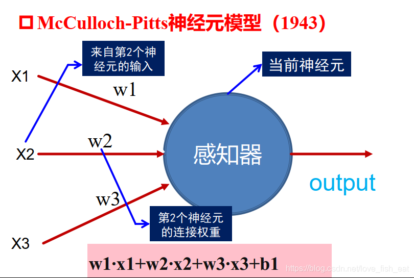
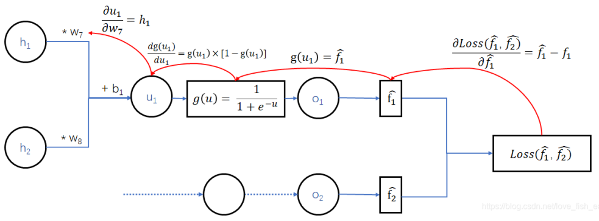

人工神经网络背后的数学原理
Contents
转载自https://blog.csdn.net/love_fish_eat/article/details/108797853
前言
提到人工智能算法，人工神经网络（ANN）是一个绕不过去的话题。但是对于新手，往往容易被ANN中一堆复杂的概念公式搞得头大，最后只能做到感性的认识，而无法深入的理解。正好最近作者也在经历这个痛苦的过程，本着真理越辩越明的态度，索性坐下来认真的把这些头大的问题梳理一番，试试看能不能搞清楚ANN背后的数学原理。
其实ANN的流程概括来说倒不是很复杂，以最简单的前馈神经网络为例，无非就是
⒈搭建网络架构（含有待定参数）
⒉通过比较输出与标签的差值定义损失函数（自变量为待定参数的函数）
⒊随机给出一组初始参数
⒋给出一个（sgd）/ 一批（Minibatch）训练样例（包括ANN的输入值和输出值）
⒌前向传播得到预测标签和损失
⒍利用梯度下降算法从后往前调整网络参数（误差反向传播，BP）
⒎得到所有参数值
⒏得到ANN并使用
其中4、5、6里的内容是需要反复迭代的（注意6是双重循环）。
在ANN的一堆操作里，梯度下降算法是一个相对独立的过程，不妨就让我们从梯度下降算法开始吧。
一、梯度下降到底在干什么
其实这个问题非常简单，只是大家被梯度下降复杂的过程搞蒙了，忘记了它的本质。梯度下降算法自始至终都在干一件事——就是找到函数的极值点，当然确切的说是极小值点。但是，这种方法不同于以往我们在高等数学里学到的找极值点的方法。那么我们首先就要问，求极值的经典方法不香吗？
1.1 求极值：传统的方法不香吗？
要回答这个问题，让我们先快速回顾一下在中学和大学里学到的传统的求极值点的方法。
对于一元函数来说，极值可能出现在一阶导函数为0的点（驻点）或是导数不存在的点。
|
|
注意，上面找到的只是可能的极值点，也就是极值存在的必要条件。还需要验证一下充分条件，才能确定极值。这时，可以判断二阶导的正负性、或是判定一阶导在可能的极值点两边的正负情况。回到我们的例子
|
|
对于二元函数$f(x,y)$，情况更复杂一些。首先要找出该函数的驻点和偏导数不存在的点，这些点仍然只是可能的极值点。而二元函数的驻点需要同时满足两个偏导数为0的条件，即

显然，这里的驻点是需要解这样一个二元方程才能求得的。对于驻点分别求出其3个二阶偏导数的值，再根据一些规则才能判断是不是极值点。
还需注意这个判断规则是不同于一元函数的，因为一元函数极值的充分条件只需要考察一个二阶偏导数，而这里则需要综合考察二元函数的3个二阶偏导数，计算量明显增大了。对于偏导数不存在的情形还需要特判。
综合以上，我们可以看出使用经典方法虽然能准确的解出极值点，但当函数自变量的个数很多时，用这种方法求解极值点还真的不香。比如：
- 该方法方法不具有普适性。所谓普适性，就是不能简单的向多元推广。从一元到二元的例子可以看出，函数的自变量个数每增加一元，就要研究新的求解方案。可以想象如果是三元函数，其二阶偏导数的个数更多，则判断极值的充分条件还要来的更加复杂。而ANN中可能会求解上亿元函数的极值点。
- 其次，这种方法需要解多元方程组，而且这些方程还不一定都是线性的。对于这种多元的非线性方程组，我们的直观感受就是很难解出。事实上，虽然存在一些可供编程的数值计算解法，但计算量大，且求出的是近似解，具有一定的局限性。
基于此，为了找出多元函数的极值点，我们还需另寻他法。这种方法要简单易行，特别是要能简单的向任意元函数推广，而且这种方法要能够适应计算机数值计算的特点，毕竟我们这套程序肯定是要放在电脑上跑的。而这就是传说中的梯度下降算法。
1.2 什么是梯度？
梯度的概念其实也不难，但为了让尽可能多的人明白这一概念，我们还是从一元函数开始吧。不过现在我们的目标是——用纯粹数值计算的方法，从函数上的某一点出发，找到函数的极值。这里我们只考察极小值。
1.2.1 一元函数找极值：从枚举试探法到梯度下降法
以函数$y=x^2$为例，让我们看看如何找到极值。

既然是从函数上的某一点出发，那么不妨设想我们在x = 1 的地方，这个地方是不是极小值点呢，我们可以试探一下。
|
|
回顾这个过程，我们将寻找极小值点的过程抽象如下：
- 首先，选择一个方向
- 试着沿该方向走一小步，并据此判断该方向是否合理。如果合理，则走这一步；如果不合理，换一个方向
- 反复重复第二步，直到找到极小值点
当然这里还有几点值得注意
- 第一，对于一元函数来说我们只有向左走或向右走两个选项。换句话说，每一步我们的选择是有限的，是可以枚举的。因此，这个方法我把它称之为枚举试探法。
- 第二，判断方向其实不必这样试错，直接求导就好。如果某点的导数值 > 0,说明在该点处函数是递增的，为了找到极小值，应该向左走；而如果导数值 < 0，则反之向右走即可。
- 第三，这种方法是不一定能找到极小值的，能不能找到极值点受选择的起始点以及每次前进的步长这两个因素影响。
对于第二点，我们可以引出梯度的定义了。
梯度是一个向量，它总指向当前函数值增长最快的方向。而它的模长则是这个最快的增长率（导数）的值。想要得到梯度向量，也很简单，它在x, y, z……等方向上的分量（坐标）就是相应的导数值。于是我们求导就可以了。
对于一元函数，函数变化的方向只有两个，我们定义一种一维的向量来表示梯度，比如5i，-5i，i前的数为正时，代表向量指向x轴正向；i前的数为负时，代表向量指向x轴负向。由下图可以看出，按照上述定义规定的梯度向量自然的指向了函数增长的方向，是不是很神奇。
由于梯度的方向正是函数增长最快的方向，所以梯度的逆方向就成了函数下降最快的方向。当然对于一元函数来说，没有最快的方向的概念，因为毕竟就两个方向而已，根本没得比。不过有了梯度，我们就可以进一步简化上述寻找极小值点的过程：
- 首先，求出某点的梯度
- 沿梯度的反方向移动一小步
- 反复进行第一、二步，直到找到极小值点
仍以函数$y=x^2$，起始点x = 1为例，让我们看看如何用梯度找到极值。
|
|
以上就是用梯度找极小值点的过程，也就是梯度下降算法所做的事情，其实不难理解对吧。
可以看出，相比于枚举试探法，梯度下降法明显智能了许多，它直接给出了正确的方向，不需要我们一步步试探了。此外，使用梯度下降法不必再关注具体的函数值，只需要把注意力放在导数上，而且只关注一阶导数即可。
在后面，我们还将给上面提到的步长step换一个高大上的名字——学习率，这样就完全是机器学习里的叫法了。
这里用到梯度的时候，我进行了单位化操作，其实也可以不进行这一步，这样当函数变化比较剧烈的时候，移动的距离就比较多；函数变化比较平缓的时候，移动的距离就比较短。比如，在我们这个例子里，只需一轮迭代就能得到结果了。
|
|
好了说完了梯度，对于前面第三点提到的找不到极值的情形，我们举两个具体的例子
还是函数$y=x^2$，如果起始点选为0.4，而学习率仍为0.5，在采用单位化梯度向量的情形下，则无法找到事实上的极小值点
对于这种情况，我们可以通过减小学习率使结果尽可能精确，例如我们将学习率设置为0.1，就仍然能得到精确的结果。事实上，在实际操作中，一般也会把学习率设置为0.1。
而对于这种有多个极值点的函数，这种方法是没法找到全部极值点的，更遑论找到全局的极值点了。这时，我们可以在算法里加入一些随机性，使其有一定概率跳出可能陷入的局部极值点。

1.2.2 多元函数的梯度
前面说过梯度下降算法的好处之一在于可以很方便的向多维推广，现在我们以二元函数为例，看看梯度是如何帮助我们找到极值点的。
这次我们的函数变成了$f(x,y)=x^2+y^2$，起始点选择为（-5, -5），学习率仍设置为0.5。现在我们的目标是从这个点出发，找到该函数的极值点，我们知道这个极值点应该是（0, 0）。

这里与一元函数有几点不同：
- 首先，二元函数描述的是一个自变量和两个因变量之间的关系，也就是说函数的定义域是一个二维平面，我们要找的极值点就在这个二维平面上。
- 其次，由于是在二维平面上寻找极值点，我们每一步可以选择的方向不再局限于一维时的向左或向右，而是瞬间变成了无穷多个方向。因此，枚举试探法彻底宣告失效。还好我们有更智能的梯度下降法。
- 一元梯度定义式里的导数现在已经换成了多元函数的偏导数。
好了，现在算法开始：
|
|
将上述过程抽象，我们就得到了梯度下降算法的全部逻辑：
我们要找函数的极小值点（使函数取值尽可能小的那一组自变量），因为，梯度的方向是函数值增长速度最快的方向，所以，沿着梯度的反方向函数值下降最快。
因此，只要沿着梯度的反方向一步步逼近就有可能找到那一组使函数取值尽可能小的自变量。
如何沿着梯度的反方向一步步逼近呢？
我们随机指定一个起点坐标（一组自变量取值），然后沿着梯度的方向求出未知的终点坐标，梯度是一个向量，本身也具有坐标
通过上面的迭代公式，无论是多少元的函数，它的一个个自变量们都会比较快的接近极值点（或者其近似）。这样我们就可以找到一组自变量值，使得函数值尽可能的小。
1.2.3 小结
- 梯度的计算公式为
- 梯度是一个向量，它总指向当前函数值增长最快的方向，而它的模长则是这个最快的增长率（导数）的值。
- 梯度下降法是一种通过数值计算求解函数极值点的方法
- 其过程概括来说就是顺着梯度的反方向一步步逼近可能的极值点
- 使用梯度下降法的理由在于求极值点的其他方法（如传统法、枚举试探法）不具有可计算性，无法编程实现
- 梯度下降法可以很方便的向多元函数推广，利于编写程序
- 记住在这个过程中，我们要找的是极值点（使函数取极值的那一组自变量），而不是具体的极值
- 梯度下降法的劣势在于不一定能找到全局最优解
人工神经网络（ANN）
如果是第一次听到人工神经网络这个名词，不免会觉得比较高大上，好像我们已经可以模仿神秘的神经系统了。其实它只是一个数学模型而已。当然ANN的效果是令人眼前一亮的，好像计算机一下子真的有了人的能力，可以识人、识物。
但其实稍加抽象便能发现，这个东西无非就是个分类器，它的输入是一张图片，或者确切的说就是一堆代表像素点的数值，而输出则是一个类别。
所以说白了，所谓的人工神经网络其实就是一个超大规模的函数。
这就好比飞机和鸟儿的关系。让飞机飞起来靠的不是依葫芦画瓢造一个人工鸟，而是靠流体力学中的原理建立数学模型，然后计算得出飞机的尺寸、造型，并设计相应的发动机。
2.1 神经元的数学模型
盗一张老师ppt里的图说明问题，可以看出ANN中的每一个节点（也就是所谓的神经元）就是这样一个简单的线性函数模型。

当然通过激活函数我们可以制造一点非线性的因素，以提高模型的表达能力。这样的话下面的神经元就代表这样一个函数$out(u)=\frac{1}{1+e^-u}$，其中，$u(x_1,x_2,x_3)=w_1x_1+w_2x_2+w_3x_3+b$，这里w1, w2, w3, b都是参数，x1, x2, x3是函数的输入，也就是因变量。
以上就是所谓的人工神经元或者叫人造神经元，很多很多这样的神经元按一定规则相连就构成了ANN，所以我才说ANN就是一个超大规模的函数而已。
是不是和你想象中的高大上的神经元大相径庭，但是我们现在所谓的人工智能其实就是这样的数学模型而已。无论是简单的图像分类器还是战胜人类的AlphaGo，都是靠这样的数学计算算出来结果的，而不是靠什么化腐朽为神奇的力量。
2.2 ANN是如何炼成的？
知道了ANN的本质，现在就让我们看看得到一个ANN需要怎么做？这里，请留意我们会遇到不同功能的函数，千万不要搞混了。
既然ANN是一个超大规模的函数，那么首先我们做的就是搭建起这个函数的架构，也就是设计人工神经网络的架构。这时这个函数就有一堆参数待定了。接下来我们准备一堆训练数据训练ANN，也就是把上面提到的待定参数都给他确定了。模型完成，可以使用。
显然，最关键的是第三步——确定未知参数。
这里首先解释训练数据，我们知道ANN是一个分类器也是一个函数，这个函数读取一些输入值，经过复杂的计算后得到输出值，这些输出值可以被解释为类别。而训练数据就是输入值和最后的输出值都已知的一组数据，换句话说就是已知一组函数的自变量和因变量的对应关系。
再说的明白点，我们的任务就是，已知函数的架构、函数的一组输入值和输出值，但不知道函数的一些参数，现在要推出这些未知参数。我把这里我们要求出的这个函数称之为目标函数。于是，一言以蔽之，我们的任务就是求出目标函数的未知参数。
为了完成这个任务，我们引出另一个重要的概念——损失函数。
2.2.1 损失函数
在这里，我们玩一点小心机。注意了，这里很关键！！！
既然我们已知目标函数的一组输入和输出，而未知其参数，那么我们不妨将计就计将这些未知参数直接视为因变量，而将目标函数的输入直接代入进去，这样我们不就得到了一个自变量是目标函数的所有未知参数且函数整体完全已知的函数了吗？
这时，如果能找到一组合适的未知参数，这个函数应该能输出和已知输入对应的输出完全一致的值。
于是我们可以通过作差比较定义损失函数了
上图给出了损失函数的两种形式（除此之外还有交叉熵损失函数等其他类型），一般需要根据不同的任务类型选取适当的损失函数。为了便于初学者理解，后文将以第二种均方误差的形式做讲解。这里之所以出现了求和符号，是因为ANN的输出端可能对应了不止一个函数，这些函数可以分别表示把一张图片分成不同类别的概率。后面我们引入一个直观的例子，一看便知。
这里一定要注意，损失函数看起来虽然还有目标函数的影子，但实际已经完全不同了。我们列表比较一下
| 目标函数 | 损失函数 | |
|---|---|---|
| 表现形式 | $f(i_1,i_2,i_3…)$ | $loss(w_1,w_2,w_3…)$ |
| 生成方式 | 事先搭好框架，再通过训练得出待定参数 | 事先搭好框架，再通过训练得出待定参数 |
| 自变量 | $(i_1,i_2,i_3…)$–神经网络的输入值（实际场合中可以是一张图片的所有像素值） | $(w_1,w_2,w_3…)$–目标函数的待定参数 |
| 函数值（因变量）含义 | 属于不同分类的概率 | 预测值与实际值的差值（越小越好） |
| 特点 | 我们最终想要得到的函数，可以用来作图像分类。是线性函数与非线性函数的组合，规模很大，自变量与参数都很多 | 我们最终想要得到的函数，可以用来作图像分类。是线性函数与非线性函数的组合，规模很大，自变量与参数都很多 |
举个例子看看函数变异的过程吧。设原函数为$f(x_1,x_2)=ax^2_1+bx^2_2+c$，这是一个关于$x_1,x_2$的二元函数，其中a, b, c均是常数，也可以叫待定参数。现在我们给出一组具体的函数输入值比如，令$x_1=-1,x_2=3$把它们代入函数，并且将a, b, c视为变量，则函数变成了关于a, b, c的三元函数$f(a,b,c)=a+9b+c$，记作。
综上，求目标函数的过程，就变成了寻找损失函数极小值点的过程，而寻找极小值点不正可以用上面介绍的梯度下降法实现吗？
2.2.2 一个实例：关于链式求导和误差反向传播（BP）
行文至此，有关ANN的重要概念，我们还剩下链式求导和误差反向传播（BP）没有提及，让我们用一个实例融会贯通一下。
考虑下面这个简单的ANN：
这个ANN只有4个神经元，分别是$h_1,h_2,o_1,o_2$。它输出两个目标函数，均是输入变量$i_1,i_2,i_3$的函数，分别由神经元$o_1,o_2$输出。可以记为

这里给$f_1,f_2$加上帽子，表示这两个函数（即目标函数）的函数值是预测值，区别于训练数据给出的实际标签值。而$(w_1,w_2,…w_10,b_1,b_2)$均是目标函数的待定参数，这里我们假定神经元$h_1,o_1,o_2$均采用sigmoid激活函数，即$g(u)=\frac{1}{1+e^-u}$，而神经元不采用激活函数。
现在定义损失函数为 $Loss(\hat{f_1},\hat{f_2})=\frac{1}{2}[(\hat{f_1}-f_1)^2+(\hat{f_2}-f_2)^2]$
注意接下来我们会将具体的一组输入变量$(i_1,i_2,i_3)$带进去，这样损失函数就被视作以$(w_1,w_2,…w_10,b_1,b_2)$为自变量的多元函数（具体的自变量变化过程参见上文描述）。其中，$\hat{f_1},\hat{f_2}$是中间变量，它们均是以$(w_1,w_2,…w_10,b_1,b_2)$为自变量的多元函数。
现在只要给出一个包含输入输出数据的训练样例，损失函数就成为不含未知参数的完全确定的函数。而我们要做的就是找到这个损失函数的极小值。
按照梯度下降算法的推导，此时我们只要按照下面的步骤就可以找出这个极小值：
- 随机指定一组初始参数$(w_1,w_2,…w_10,b_1,b_2)$
- 计算Loss函数关于各个参数的偏导数，注意这一步要代入参数的具体数值，也就是说这一步得到的是一个数
- 按照梯度下降的公式更新各个参数值直到满足一定条件为止
其中2、3里的内容是需要反复迭代的。
现在，我们以其中的几个参数为例，看看在调整过程中会遇到什么新问题。
先试试调整$w_7$吧，这时我们需要求出损失函数对自变量$w_7$的偏导数值（注意是数值，不是表达式），为此写出它的依赖关系：


这里，Loss函数依赖于变量$\hat{f_1},\hat{f_2}$，但$\hat{f_2}$与$w_7$无关。回想多元函数求偏导数的规则，我们对求导时$w_7$，应将视为常数$\hat{f_2}$。
而$\hat{f_1}$依赖于变量$(w_7,w_8,b_1)$，因此这里应按照复合函数求导法则，即传说中的链式求导法则，先让Loss函数对变量$\hat{f_1}$求导，再令$\hat{f_1}$对$w_7$求导，即：
其实从神经网络的图中可以很清楚的看出求导链。
这里有几个要点：
- 首先，式子的每一项均加下标w，表示要将具体的一组$(w_1,w_2,…w_10,b_1,b_2)$代入式子，得到一个数值
- 其次，当g(u)表示sigmoid函数时，对其求导的结果就是
- 函数对变量求偏导时，虽然也是函数，但它是关于自变量的函数，与无关，因此视为常数。这样，对求偏导的结果就是
- 等式右端最后得出的三项，在给出一个训练样例，并指定初始参数后，是可以独立计算出结果的
求出损失函数对$w_7$的偏导数值，我们就可以按照梯度下降算法推导的公式，调整这个参数了！
现在，再来看看靠前的参数是怎么调整的，我们以$w_1$和$w_6$为例
还是老规矩，对照神经网络图，先写出它的依赖关系：
可以看出$w_1$和$w_6$，分别是函数$h_1$和$h_2$的变量，而函数$\hat{f_1},\hat{f_1}$均与$h_1$和$h_2$有关，所以Loss函数需要对$\hat{f_1},\hat{f_1}$均求偏导。
依然按照链式求导法则对$w_1$求偏导，有：
对$w_6$求偏导，有：
注意红框圈出来的部分是不是有些眼熟？
事实上，这一部分已经在调整后层参数的时候计算过了（请回看计算$w_7$时的计算公式）。因此在编程时，可以让程序保存中间结果，这里直接拿来用。
现在纵观整个过程，我们惊奇的发现，对于ANN，当我们需要使用它时，是从最前面给出输入，然后一步步往后计算得出这个庞大复杂函数的输出的；而当我们需要训练它时，则是从最后面的参数开始，一步步向前求导，调整各个参数的。并且计算前面的参数时一般都会用到之前计算过的中间结果。
这样，ANN调整参数的过程就可以看作是一个**误差反向传播（BP）**的过程。
之所以会这样反向传播，是因为神经网络中靠后的参数依赖的中间变量少、复合层数少，而靠前的参数则经过层层复合，求导链会拉的很长。
=== 2.2.3 最后的一点小问题
以上我们将求偏导的过程整个过了一遍，而求偏导只是梯度下降算法的一环。
程序跑起来之后，我们会对每一个训练样例，一遍遍的求偏导，直到基本上找到极小值点。
也就是说，按照梯度下降算法，每一个训练样例都会最终给出一组参数值。
一个训练集中显然会有多个训练样例，因此最终会得到好多组各不相同的参数值。
而ANN的训练目标是确定一组参数值，得到一个有一定效果的很复杂的函数，
怎么解决？
对每一个参数，我们可以将不同训练样例得出的不同值求一个平均。也可以构建一个更大的损失函数，即将每一个训练样例生成的损失函数求和，然后用梯度下降算法找到这个累计损失函数的极小值点。
这样，我们就能通过训练，最终确定ANN这个大函数的所有待定参数，然后用它来做一些神奇的事情。
Author nanshusu
LastMod 2021-09-07